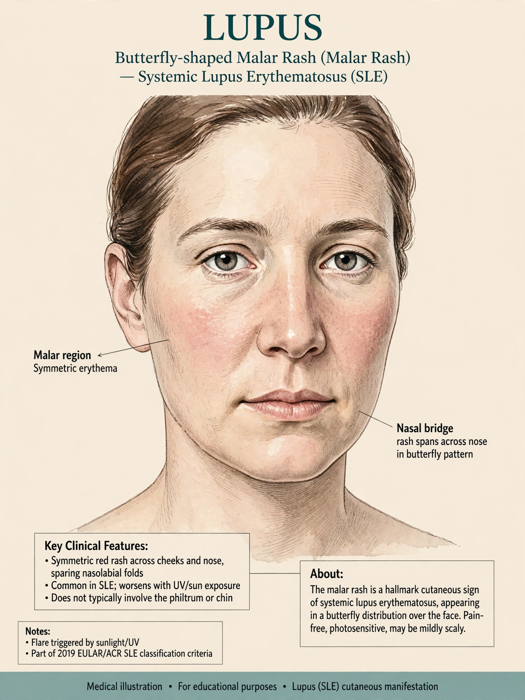

Lupus, technically systemic lupus erythematosus (SLE), is an autoimmune disease in which the immune system attacks healthy tissues throughout the body — skin, joints, kidneys, blood cells, brain, heart and lungs.

The classic sign is a butterfly-shaped rash across the cheeks and nose. Other features include photosensitivity, mouth ulcers, arthritis, serositis, lupus nephritis, seizures, and hematologic abnormalities.
Diagnosis relies on clinical criteria and antinuclear antibodies; anti-double-stranded DNA and anti-Smith antibodies are relatively specific.
There is no cure. Flares are treated with corticosteroids such as prednisone, antimalarials, and immunosuppressants; biologics such as belimumab target B cells.
The name lupus (Latin for wolf) was applied to skin lesions in medieval medicine; the systemic nature was recognized in the 19th–20th centuries.